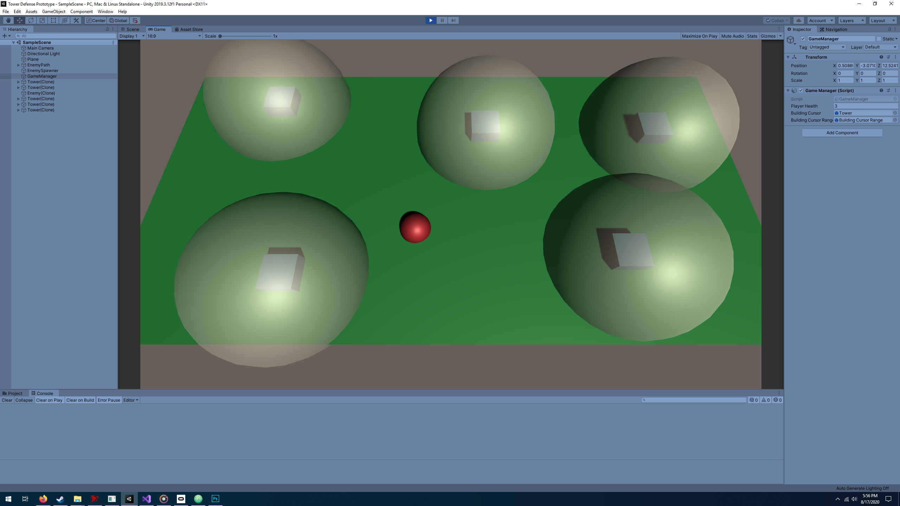

Hello and Welcome to CHANCHO.dev
Latest Post: Maze Generator
--
Currently completing small weekly projects with the goal of refreshing skills for the next LD Game Jam in October.
--
I made a small tower defence prototype this week
I didn't make any visual assets for it so it's just
very basic geometry, but the idea was there.
It's really terrible so I don't think I'll post it

--
Redisgned the site
Made it easier to add to nav
Latest Update 08/17/20:
-Chancho